PromQL 简介：
- Prometheus提供一个函数式的表达式语言PromQL (Prometheus Query Language)，可以使用户实时地查找和聚合时间序列数据，表达式计算结果可以在图表中展示，也可以在Prometheus表达式浏览器中以表格形式展示，或者作为数据源, 以HTTP API的方式提供给外部系统使用。
- PromQL 主要用于时序数据的查询和二次计算场景。
- https://prometheus.io/docs/prometheus/latest/querying/basics
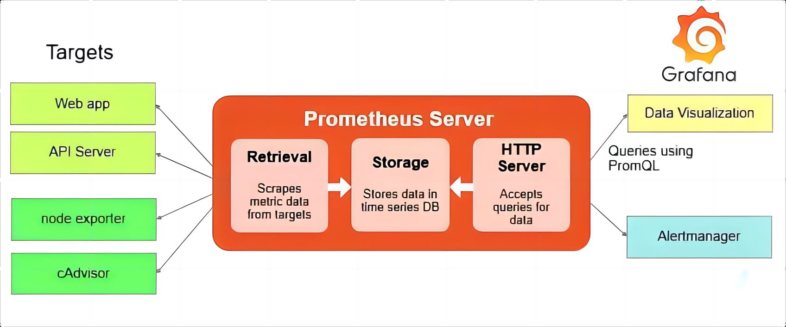
时序数据
我们可以把时序数据理解成一个以时间为轴的矩阵，你可以看一下我给出的例子，例子中有三个时间序列，在时间轴上分别对应不同的值。
^
│ . . . . . . . . . . node_load1{host="host01",zone="bj"}
│ . . . . . . . . . . node_load1{host="host02",zone="sh"}
│ . . . . . . . . . . node_load1{host="host11",zone="sh"}
v
<------- 时间 ---------->
每一个点称为一个样本（sample），样本由三部分组成。
- 指标（metric）：metric name和描述当前样本特征的labelsets。
- 时间戳（timestamp）：一个精确到毫秒的时间戳。
- 值（value）：表示该时间样本的值。
PromQL就是对这样一批样本数据做查询和计算操作。
PromQL典型的应用场景
PromQL典型的应用场景就是时序数据的查询和二次计算，这也是PromQL的两个核心价值，其中查询操作靠的就是查询选择器。
查询选择器
随便一个公司，时序数据至少都有成千上万条，而每个监控图表的渲染或者每条告警规则的处理，都只是针对有限的几条数据，所以 PromQL第一个需求就是过滤 。假设我有两个需求，一是查询上海所有机器1分钟的负载，二是查询所有以host0为前缀的机器1分钟的负载。PromQL的写法是怎样的呢？你可以看一下。
# 通过 = 来做 zone 的匹配过滤
node_load1{zone="sh"}
# 通过 =~ 来做 host 的正则过滤
node_load1{host=~"host0.*"}
大括号里写过滤条件，主要是针对标签过滤，操作符除了等于号和正则匹配之外，还有不等于 != 和正则非 !~。这个比较容易理解，不过多介绍了。需要注意的是，metric name 也是一个非常重要的过滤条件，可以写到大括号里，比如我想同时查看上海机器的 load1、load5、load15 三个指标，可以对 __name__，也就是 metric 名字做正则过滤。
{__name__=~"node_load.*", zone="sh"}
上面例子中的3条PromQL都叫做即时查询（Instant Query），返回的内容叫做即时向量（ Instant Vector）。
即时查询返回的是当前的最新值，比如 10 点整发起的查询，返回的就是 10 点整这一时刻对应的数据。但是监控数据是周期性上报的，并非每时每刻都有数据上报，10 点整的时候可能恰恰没有数据进来，此时 Prometheus 就会往前看，看看9点59、9点58、9点57等时间点有没有上报数据。最多往前看多久呢？
这个数据由Prometheus的启动参数 --query.lookback-delta 控制，这个参数默认是 5 分钟。从监控的角度来看，我建议你调短一些，比如改成 1 分钟 --query.lookback-delta=1m。为什么呢？
我举个例子来说明一下，我们有个客户使用 Telegraf 做 HTTP 探测，配置了一个告警规则，说 response_code 连续 3 分钟都不等于 200 才告警。实际上只有一个数据点的 response_code 不等于200，过了3分钟还是报警了。他感觉非常困惑，就来问我为什么。
实际上，主要有两个原因，一是因为 Telegraf 的 HTTP 探测，会默认把 status code 放到标签里，这会导致标签非稳态结构（这个行为不太好，最好是把这类标签直接丢弃掉，或者使用categraf、blackbox_exporter做采集器），平时 code=200，出问题的时候 code=500，在 Prometheus 生态里，标签变了就是新的时间序列了。
第二个原因就跟 query.lookback-delta 有关了，虽然只有一个点异常，也就是说 code=500 的这个时间序列只有一个点，但是告警规则每次执行查询的时候，都是查到这个异常点，连续5分钟都是如此。所以就满足了规则里连续3分钟才告警的这个条件，触发了告警。这就是我建议你把 --query.lookback-delta 调短的原因。
除了即时查询，PromQL中还有一种查询，叫做范围查询（Range Query），返回的内容叫做 Range Vector，比如下面的 PromQL。
{__name__=~"node_load.*", zone="sh"}[1m]
相比即时查询，范围查询就是多加了一个时间范围1分钟。即时查询每个指标返回一个点，范围查询会返回多个点。假设数据10秒钟采集一次，1分钟有6个点，都会返回。
Prometheus 官方文档 在介绍各个函数的使用方法的时候，都会讲解函数参数，标明是 Range Vector 还是 Instant Vector，这两种查询方式是基础知识，你需要牢牢掌握。
PromQL 查询数据类型：Instant Vector VS Range Vector
- Instant Vector：瞬时向量/瞬时数据,是对目标实例查询到的同一个时间戳的一组时间序列数据(按照时间的推移对数据进存储和展示)，每个时间序列包含单个数据样本，比如node_memory_MemFree_bytes查询的是当前剩余内存(可用内存)就是一个瞬时向量，该表达式的返回值中只会包含该时间序列中的最新的一个样本值，而相应的这样的表达式称之为瞬时向量表达式，以下是查询node节点可用内存的瞬时向量表达式：
root@prometheus-server1:~# curl 'http://172.31.1.101:9090/api/v1/query' --data 'query=node_memory_MemFree_bytes' --datatime=1669954493
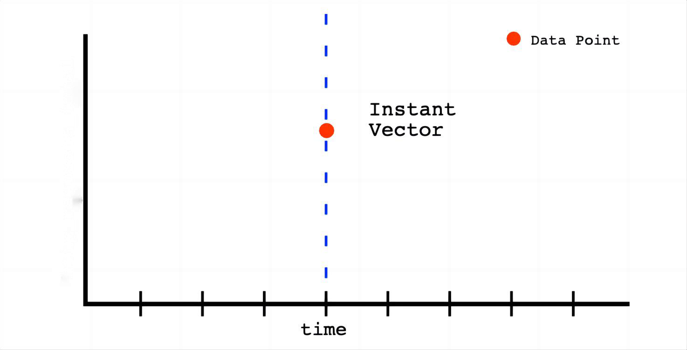
- Range Vector：范围向量/范围数据,是指在任何一个时间范围内，抓取的所有度量指标数据.比如最近一天的网卡流量趋势图、或最近 5 分钟的 node 节点内容可用字节数等，以下是查询 node 节点可用内存的范围向量表达式：
root@prometheus-server1:~# curl 'http://172.31.1.101:9090/api/v1/query' --data 'query=node_memory_MemFree_bytes{instance="172.31.1.181:9100"}[5m]' --data time=1669954493
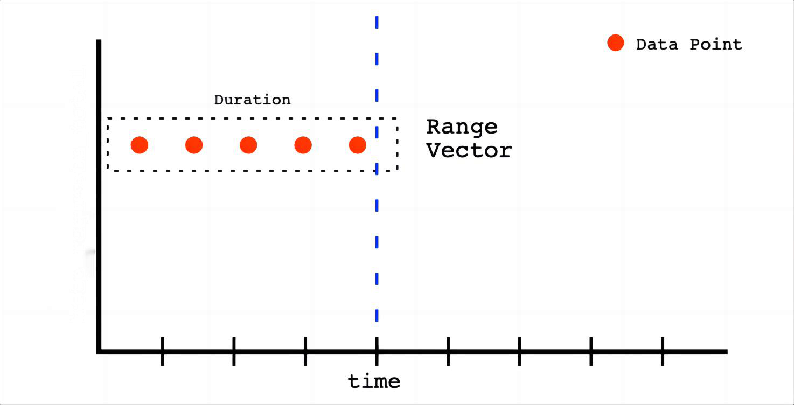
Instant Vector VS Range Vector
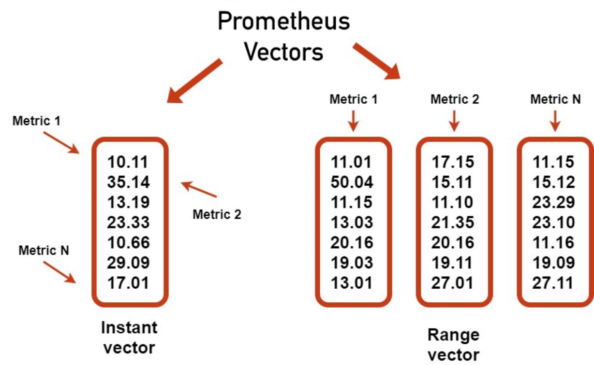
- scalar：标量/纯量数据,是一个浮点数类型的数据值，使用node_load1获取到时一个瞬时向量后，在使用prometheus的内置函数scalar()将瞬时向量转换为标量，例如：scalar(sum(node_load1))
root@prometheus-server1:~# curl 'http://172.31.1.101:9090/api/v1/query' --data 'query=scalar(sum(node_load1{instance="172.31.1.181:9100"}))' --data time=1669954493 {"status":"success","data":{"resultType":"scalar","result":[1669954493,"0.26"]}}
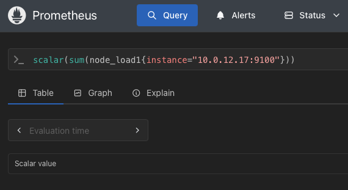
- string：简单的字符串类型的数据，目前未使用，（a simple string value; currently unused）。
https://prometheus.io/docs/prometheus/latest/querying/basics
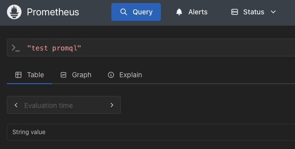
PromQL指标数据类型：
prometheus指标数据类型：
- Counter:计数器
- Gauge:仪表盘
- Histogram：累积直方图
- Summary：摘要
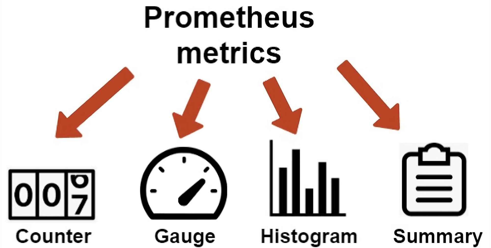
Counter:计数器
Counter类型代表一个累积的指标数据，在没有被重启的前提下只增不减(生活中的电表、水表)，比如磁盘I/O总数、Nginx/API的请求总数、网卡流经的报文总数等。
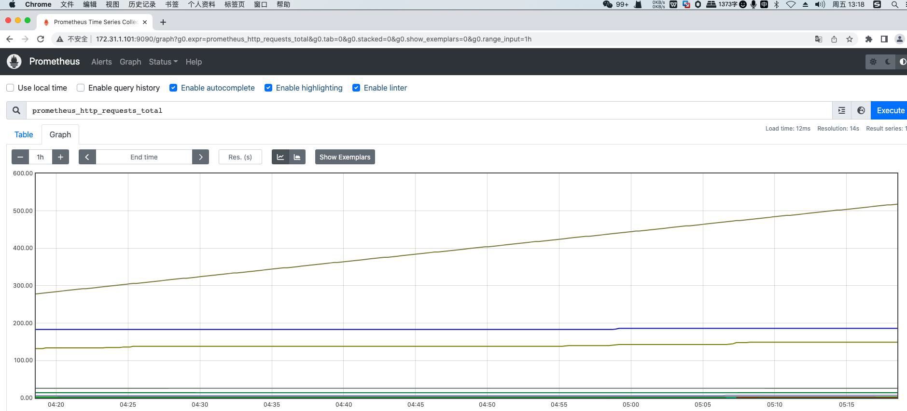
Gauge:仪表盘
Gauge类型代表一个可以任意变化的指标数据，值可以随时增高或减少，如带宽速率、CPU负载、内存利用率、nginx 活动连接数等。
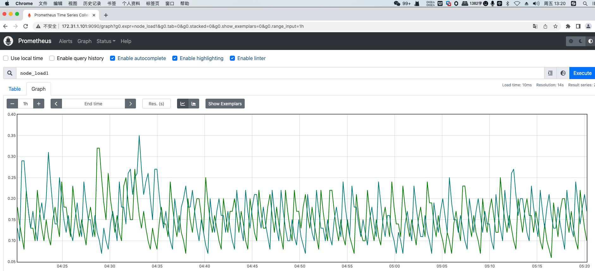
Histogram：累积直方图
Histogram 会在一段时间范围内对数据进行采样(通常是请求持续时间或响应大小等),假如每分钟产生一个当前的活跃连接数，那么一天 24 小时*60 分钟 = 1440 分钟就会产生 1440个 数据，查看数据的每间隔的绘图跨度为 2 小时，那么 2 点的柱状图(bucket)会包含 0 点到 2 点即两个小时的数据，而4点的柱状图(bucket)则会包含 0 点到 4 点的数据，而 6 点的柱状图(bucket)则会包含 0 点到 6 点的数据，可用于统计从当天零点开始到当前时间的数据统计结果，如 http 请求成功率、丢包率等，比如 ELK 的当天访问 IP 统计。
# TYPE prometheus_tsdb_compaction_chunk_size_bytes histogram
prometheus_tsdb_compaction_chunk_size_bytes_bucket{le="32"} 28
prometheus_tsdb_compaction_chunk_size_bytes_bucket{le="48"} 76
prometheus_tsdb_compaction_chunk_size_bytes_bucket{le="72"} 1115
prometheus_tsdb_compaction_chunk_size_bytes_bucket{le="108"} 1263
prometheus_tsdb_compaction_chunk_size_bytes_bucket{le="162"} 2171
prometheus_tsdb_compaction_chunk_size_bytes_bucket{le="243"} 4085
prometheus_tsdb_compaction_chunk_size_bytes_bucket{le="364.5"} 4297
prometheus_tsdb_compaction_chunk_size_bytes_bucket{le="546.75"} 4412
prometheus_tsdb_compaction_chunk_size_bytes_bucket{le="820.125"} 4468
prometheus_tsdb_compaction_chunk_size_bytes_bucket{le="1230.1875"} 4524
prometheus_tsdb_compaction_chunk_size_bytes_bucket{le="1845.28125"} 4683
prometheus_tsdb_compaction_chunk_size_bytes_bucket{le="2767.921875"} 4684
prometheus_tsdb_compaction_chunk_size_bytes_bucket{le="+Inf"} 4684
prometheus_tsdb_compaction_chunk_size_bytes_sum 1.053252e+06
prometheus_tsdb_compaction_chunk_size_bytes_count 4684
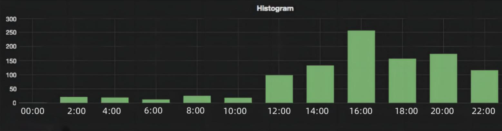
Summary：摘要图
默认统计选中的指标的最近10分钟内的数据的分位数，可以指定数据统计时间范围，基于分位数(Quantile),亦称分位点,是指用分割点(cut point)将随机数据统计并划分为几个具有相同概率的连续区间，常见的为四分位，四分位数是将数据样本统计后分成四个区间，将范围内的数据进行百分比的占比统计,从0到1，表示是0%~100%，(0%~25%,%25~50%,50%~75%,75%~100%),利用四分位数，可以快速了解数据的大概统计结果。
如下统计的是 0、0.25、0.5、0.75、1的数据量分别是多少。
go_gc_duration_seconds
# HELP go_gc_duration_seconds A summary of the pause duration of garbage collection cycles.
# TYPE go_gc_duration_seconds summary
go_gc_duration_seconds{quantile="0"} 1.8479e-05
go_gc_duration_seconds{quantile="0.25"} 6.5059e-05 #25%以内的go_gc_duration_seconds的持续时间
go_gc_duration_seconds{quantile="0.5"} 9.3605e-05 #50%以内的go_gc_duration_seconds的持续时间
go_gc_duration_seconds{quantile="0.75"} 0.000133103 #75%以内的go_gc_duration_seconds的持续时间
go_gc_duration_seconds{quantile="1"} 0.004022673 #100%以内的go_gc_duration_seconds的持续时间
go_gc_duration_seconds_sum 1.446781088 #数据总和
go_gc_duration_seconds_count 7830 #数据个数
node-exporter指标数据格式：
- 没有标签的
# metric_name metric_value
# TYPE node_load15 gauge
node_load15 0.1
- 一个标签的
# metric_name{label1_name="label1-value"} metric_value
# TYPE node_network_receive_bytes_total counter
node_network_receive_bytes_total{device="eth0"} 1.44096e+07
- 多个标签的
# metric_name{label1_name="label1-value","labelN_name="labelN-value} metric_value
# TYPE node_filesystem_files_free gauge
node_filesystem_files_free{device="/dev/sda2",fstype="xfs",mountpoint="/boot"} 523984
PromQL查询指标数据示例：
node_memory_MemTotal_bytes #查询node节点总内存大小
node_memory_MemFree_bytes #查询node节点剩余可用内存
node_memory_MemTotal_bytes{instance="172.31.2.181:9100"} #基于标签查询指定节点的总内存
node_memory_MemFree_bytes{instance="172.31.2.181:9100"} #基于标签查询指定节点的可用内存
node_disk_io_time_seconds_total{device="sda"} #查询指定磁盘的每秒磁盘io
node_filesystem_free_bytes{device="/dev/sda1",fstype="xfs",mountpoint="/"} #查看指定磁盘的磁盘剩余空间
# HELP node_load1 1m load average. #CPU负载
# TYPE node_load1 gauge
node_load1 0.1
# HELP node_load15 15m load average.
# TYPE node_load15 gauge
node_load15 0.17
# HELP node_load5 5m load average.
# TYPE node_load5 gauge
node_load5 0.13
PromQL标签匹配：
基于标签对指标数据进行匹配：
= :选择与提供的字符串完全相同的标签，精确匹配。
!= :选择与提供的字符串不相同的标签，去反。
=~ :选择正则表达式与提供的字符串（或子字符串）相匹配的标签。
!~ :选择正则表达式与提供的字符串（或子字符串）不匹配的标签。
#查询格式<metric name>{<label name>=<label value>, ...}
node_load1{instance="172.31.7.111:9100"}
node_load1{job="promethues-node"}
node_load1{job="promethues-node",instance="172.31.7.111:9100"} #精确匹配
node_load1{job="promethues-node",instance!="172.31.7.111:9100"} #取反
node_load1{instance=~"172.31.7.11.*:9100$"} #包含正则且匹配
node_load1{instance!~"172.31.7.111:9100"} #包含正则且取反
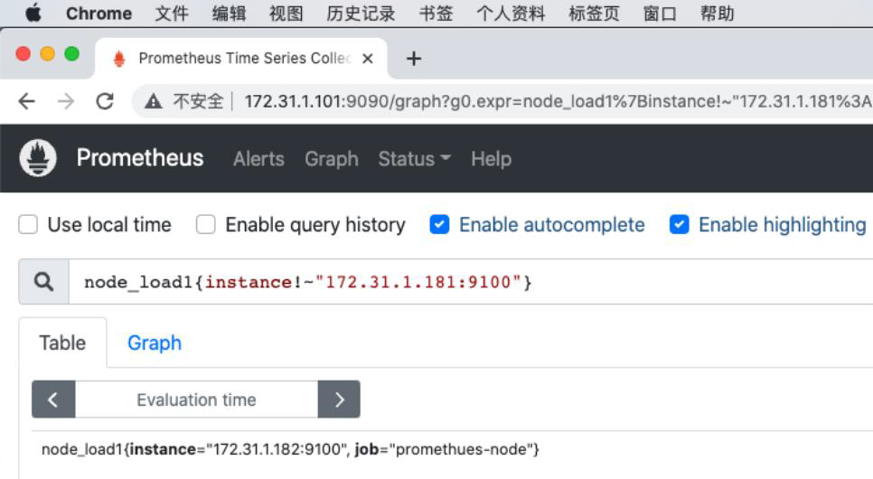
PromQL 时间范围：
对指标数据进行时间范围指定:
s - 秒
m - 分钟
h - 小时
d - 天
w - 周
y - 年
#瞬时向量表达式，选择当前最新的数据
node_memory_MemTotal_bytes{}
#区间向量表达式，选择以当前时间为基准，查询所有节点
node_memory_MemTotal_bytes指标5分钟内的数据
node_memory_MemTotal_bytes{}[5m]
#区间向量表达式，选择以当前时间为基准，查询指定节点
node_memory_MemTotal_bytes指标5分钟内的数据
node_memory_MemTotal_bytes{instance="172.31.1.181:9100"}[5m]
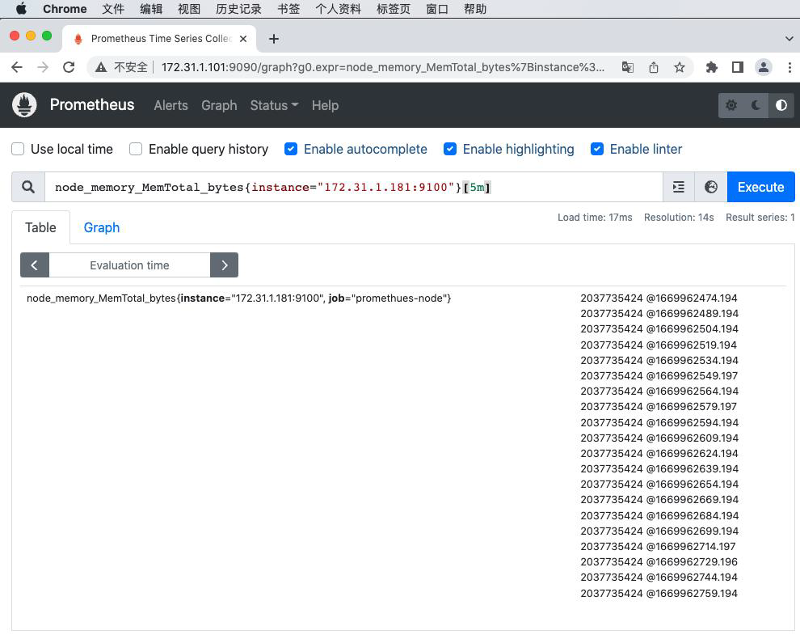
上面说的就是PromQL第一个核心价值——筛选。接下来我们看PromQL的另一个核心价值——计算。计算部分内容比较多，有算术、比较、逻辑、聚合运算符等，下面我们来一一看下。
PromQL 运算符：
对指标数据进行数学运算：
- 加法
- 减法
- 乘法
- / 除法
- % 模
- ^ 幂(N次方)
# 计算内存可用率，就是内存可用量除以内存总量，又希望按照百分比呈现，所以最后乘以100
mem_available{app="clickhouse"} / mem_total{app="clickhouse"} * 100
# 计算北京区网口出向的速率，原始数据的单位是byte，网络流量单位一般用bit，所以乘以8
irate(net_sent_bytes_total{zone="beijing"}[1m]) * 8
node_memory_MemFree_bytes/1024/1024 #将内存进行单位从字节转行为兆
node_disk_read_bytes_total{device="sda"} + node_disk_written_bytes_total{device="sda"} #计算磁盘读写数据量
(node_disk_read_bytes_total{device="sda"} + node_disk_written_bytes_total{device="sda"}) / 1024 / 1024 #单位转换
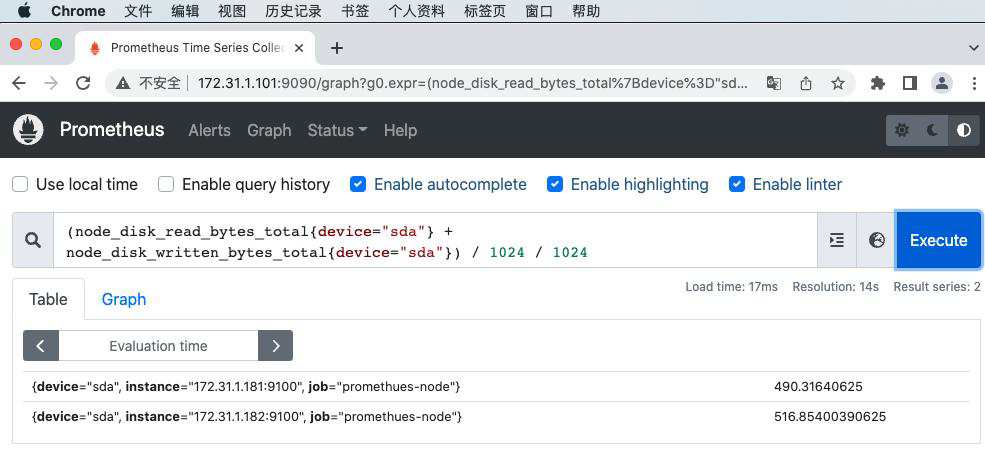
比较运算符
比较运算符就是大于、小于、等于、不等于之类的，理解起来也比较简单，但是意义重大， **告警规则的逻辑就是靠比较运算符来支撑的**。这里我也举两个例子，你结合例子来理解会更容易。
mem_available{app="clickhouse"} / mem_total{app="clickhouse"} * 100 < 20
irate(net_sent_bytes_total{zone="beijing"}[1m]) * 8 / 1024 / 1024 > 700
带有比较运算符的 PromQL 就是告警规则的核心，比如内存可用率的告警，在 Prometheus 中可以这样配置。
groups:
- name: host
rules:
- alert: MemUtil
expr: mem_available{app="clickhouse"} / mem_total{app="clickhouse"} * 100 < 20
for: 1m
labels:
severity: warn
annotations:
summary: Mem available less than 20%, host:{{ $labels.ident }}
例子中的 expr 指定了查询用的 PromQL。告警引擎会根据用户的配置，周期性地执行查询。如果查不到就说明一切正常，没有机器的内存可用率低于20%。如果查到了，就说明触发了告警，查到几条就触发几条告警。当然，偶尔一次低于 20% 不是什么大事，只有连续1分钟每次查询都低于20%才会告警，这就是 for: 1m 存在的意义。
逻辑运算符
逻辑运算符有3个，and、or和unless，用于 instant-vector 之间的运算。and 是求交集，or是求并集，unless是求差集。我们来看一个 and 的使用场景。
关于磁盘的使用率问题，有的分区很大，比如16T，有的分区很小，比如50G，像这种情况如果只是用磁盘的使用率做告警就不太合理，比如 disk_used_percent{app="clickhouse"} > 70 表示磁盘使用率大于 70% 就告警。对于小盘，这个策略是合理的，但对于大盘，70%的使用率表示还有非常多的空间，就不太合理。这时我们希望给这个策略加一个限制，只有小于200G的硬盘在使用率超过70%的时候，才需要告警，这时我们就可以使用 and 运算符，你可以看一下最终 PromQL。
disk_used_percent{app="clickhouse"} > 70 and disk_total{app="clickhouse"}/1024/1024/1024 < 200
同理，or和unless这两个逻辑运算符也是这样，你可以自己试一试。
算术、比较、逻辑运算符，基本的使用方式比较简单，但如果运算符两侧的向量标签不统一，就会面临一些更复杂的处理逻辑，需要在 PromQL 中给出向量匹配规则，下面我们就来一起看一下。
向量匹配
向量之间的操作是想要在右侧的向量中，为左侧向量的每个条目找到一个匹配的元素，匹配行为分为：one-to-one、many-to-one、one-to-many。刚才介绍的磁盘使用率的例子，就是典型的 one-to-one 类型，左右两侧的指标，除了指标名，其余标签都是一样的，非常容易找到对应关系。但是有时候，我们希望用 and 求交集，但是两侧向量标签不同，怎么办呢？
此时我们可以使用关键字 on 和 ignoring 来限制用于做匹配的标签集。
mysql_slave_status_slave_sql_running == 0
and ON (instance)
mysql_slave_status_master_server_id > 0
这个PromQL想表达的意思是如果这个MySQL实例是个slave（master_server_id>0），就检查其slave_sql_running的值，如果slave_sql_running==0，就表示slave sql线程没有在运行。
但mysql_slave_status_slave_sql_running和mysql_slave_status_master_server_id这两个metric的标签，可能并非完全一致。不过好在二者都有个instance标签，且相同的instance标签的数据从语义上来看就表示一个实例的多个指标数据，那我们就可以用关键字on来指定只使用instance标签做匹配，忽略其他标签。
与on相反的是关键字ignoring，顾名思义，ignoring是忽略掉某些标签，用剩下的标签来做匹配。我们拿 Prometheus 文档中的例子来说明。
## example series
method_code:http_errors:rate5m{method="get", code="500"} 24
method_code:http_errors:rate5m{method="get", code="404"} 30
method_code:http_errors:rate5m{method="put", code="501"} 3
method_code:http_errors:rate5m{method="post", code="500"} 6
method_code:http_errors:rate5m{method="post", code="404"} 21
method:http_requests:rate5m{method="get"} 600
method:http_requests:rate5m{method="del"} 34
method:http_requests:rate5m{method="post"} 120
## promql
method_code:http_errors:rate5m{code="500"}
/ ignoring(code)
method:http_requests:rate5m
## result
{method="get"} 0.04 // 24 / 600
{method="post"} 0.05 // 6 / 120
例子里都是 one-to-one 的对应关系，这个好理解。难理解的是 one-to-many 和 many-to-one，这种情况下，做指标运算时就要借助关键字 group_left 和 group_right 了。left、right 指向高基数那一侧的向量。还是用上面method_code:http_errors:rate5m和method:http_requests:rate5m 这两个指标来举例，你可以看一下使用 group_left 的PromQL和输出的结果。
## promql
method_code:http_errors:rate5m
/ ignoring(code) group_left
method:http_requests:rate5m
## result
{method="get", code="500"} 0.04 // 24 / 600
{method="get", code="404"} 0.05 // 30 / 600
{method="post", code="500"} 0.05 // 6 / 120
{method="post", code="404"} 0.175 // 21 / 120
比如针对 method="get" 的条目，右侧的向量中只有一个记录，但是左侧的向量中有两个记录，所以高基数的一侧是左侧，故而使用 group_left。
这里我再举一个例子，来说明 group_left、group_right 的一个常见用法。比如我们使用 kube-state-metrics 来采集 Kubernetes 各个对象的指标数据，其中针对 pod 有个指标是 kube_pod_labels，该指标会把 pod 的一些信息放到标签里，指标值是1，相当于一个元信息。
kube_pod_labels{
[...]
label_name="frontdoor",
label_version="1.0.1",
label_team="blue"
namespace="default",
pod="frontdoor-xxxxxxxxx-xxxxxx",
} = 1
假设某个 Pod 是接入层的，统计了很多 HTTP 请求相关的指标，我们想统计 5xx 的请求数量，希望能按 Pod 的 version 画一个饼图。这里有个难点：接入层的请求类指标没有 version 标签，version 信息只出现在 kube_pod_labels 里，那怎么让二者联动呢？
上答案！
sum(
rate(http_request_count{code=~"^(?:5..)$"}[5m])) by (pod)
*
on (pod) group_left(label_version) kube_pod_labels
我们把这个 PromQL掰开揉碎，看一下具体的意思，乘号前面的部分，是一个统计每秒 5xx 数量的典型语法，按照 pod 维度做分组统计。
然后我们乘以 kube_pod_labels，这个值是1。任何值乘以1都是原来的值，所以对整体数值没有影响，而 kube_pod_labels 有多个标签，而且和 sum 语句的结果向量的标签不一致，所以通过 on(pod) 语法来指定只按照 pod 标签来建立对应关系。
最后，利用 group_left(label_version)，把 label_version 附加到了结果向量里，高基数的部分显然是 sum 的部分，所以使用 group_left 而非 group_right。
PromQL 聚合运算：
除了前面我们说的查询需求外，针对单个指标的多个 series，还会有一些聚合需求。比如说，我想查看100台机器的平均内存可用率，或者想要排个序，取数值最小的10台。这种需求可以使用 PromQL 内置的聚合函数来实现。
# 求取 clickhouse 的机器的平均内存可用率
avg(mem_available_percent{app="clickhouse"})
# 把 clickhouse 的机器的内存可用率排个序，取最小的两条记录
bottomk(2, mem_available_percent{app="clickhouse"})
另外，我们有时会有分组统计的需求，比如我想分别统计 clickhouse 和 canal 的机器内存可用率，可以使用关键字 by 指定分组统计的维度（与 by 相反的是 without）。
avg(mem_available_percent{app=~"clickhouse|canal"}) by (app)
注意：这些聚合运算，可以理解为 **纵向拟合**。你可以想象一下，100 台机器的内存可用率，在折线图上有100条线，如果我们想要把这100条线拟合成一条线，就相当于把每个时刻的100个点拟合成1个点。那怎么让100个点变成1个点呢？求个平均值或最大值之类的，就可以实现，所以就有了这些聚合运算符。
还有一类聚合运算函数，可以看作是 **横向拟合**，也就是 <aggregation>_over_time 类的函数。这些函数接收范围向量，因为范围向量是一个时段内有多个值， <aggregation> 就是对这多个值做运算。
max_over_time(target_up[2m])
target_up 指标后面加了 [2m]，指的就是获取这个指标最近 2 分钟的所有数据点，如果15秒采集一个点，2分钟就是8个点，max_over_time就是对这8个点求最大值，相当于对各个时间序列做横向拟合。
对指标数据进行进行聚合运算：
- max() #最大值
- min() #最小值
- avg() #平均值
计算每个节点的最大的流量值：
max(node_network_receive_bytes_total) by (instance)
计算每个节点最近五分钟每个device的最大流量
max(rate(node_network_receive_bytes_total[5m])) by (device)
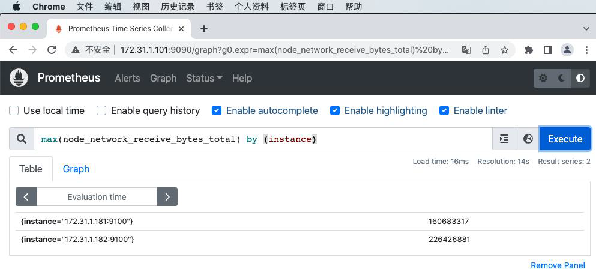
对指标数据进行进行聚合运算：
sum() #求数据值相加的和(总数)
sum(prometheus_http_requests_total)
{} 2495 #最近总共请求数为2495次，用于计算返回值的总数(如http请求次数)
count() #统计返回值的条数
count(node_os_version)
{} 2 #一共两条返回的数据，可以用于统计节点数、pod数量等
count_values() #对value的个数(行数)进行计数,并将value赋值给自定义标签，从而成为新的label
count_values("node_version",node_os_version) #统计不同的系统版本节点有多少
{node_version="20.04"} 2
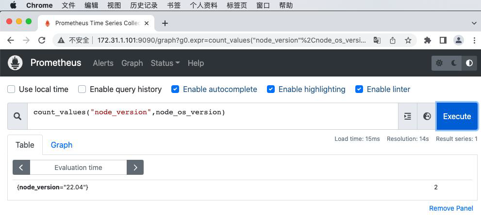
对指标数据进行进行聚合运算：
abs() #返回指标数据的值
abs(sum(prometheus_http_requests_total{handler="/metrics"}))
absent() #如果监指标有数据就返回空，如果监控项没有数据就返回1，可用于对监控项设置告警通知(如果返回值等于1就触发告警通知)
absent(sum(prometheus_http_requests_total{handler="/metrics"}))
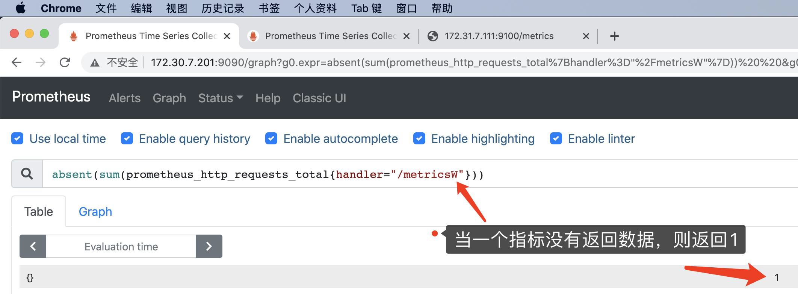
对指标数据进行进行聚合运算：
stddev() #标准差
stddev(prometheus_http_requests_total) #5+5=10,1+9=10,1+9这一组的数据差异就大，在系统是数据波动较大，不稳定
stdvar() #求方差
stdvar(prometheus_http_requests_total)
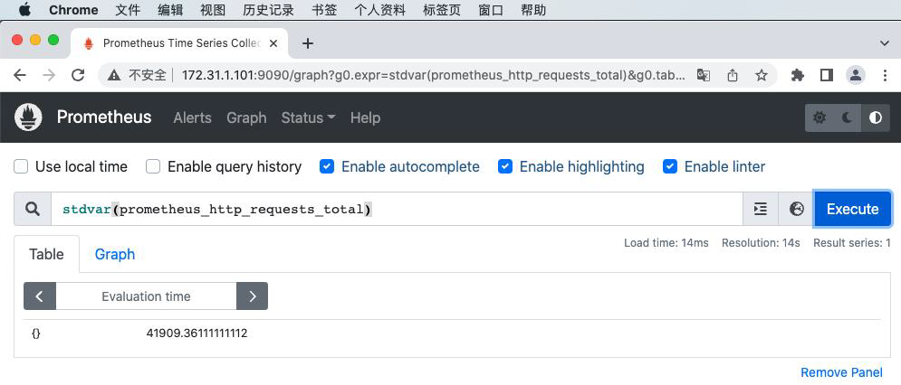
对指标数据进行进行聚合运算：
topk() #样本值排名最大的N个数据
#取从大到小的前6个
topk(6, prometheus_http_requests_total)
bottomk() #样本值排名最小的N个数据
#取从小到大的前6个
bottomk(6, prometheus_http_requests_total)
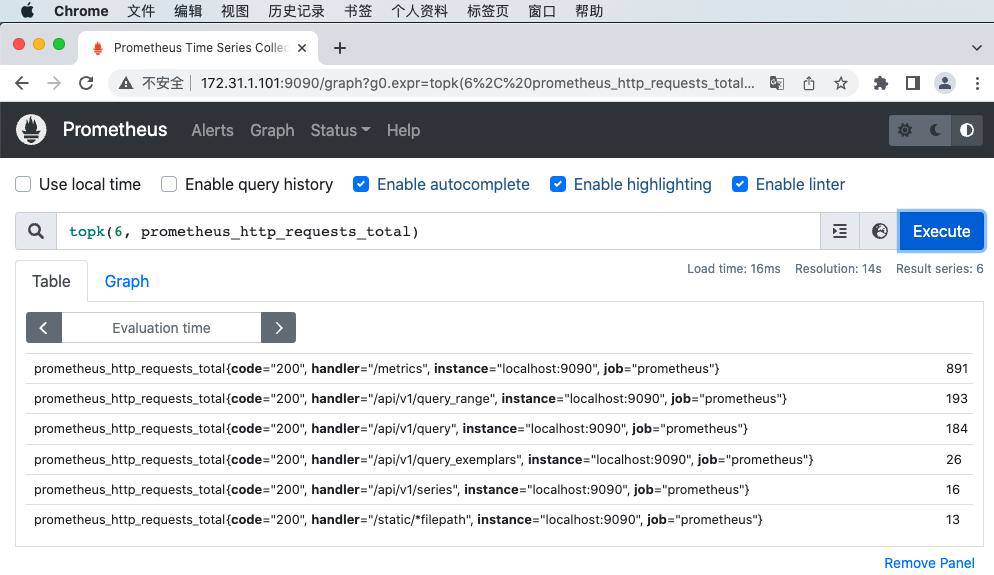
对指标数据进行进行聚合运算：
- rate() #rate函数是专门搭配counter数据类型使用函数，rate会取指定时间范围内所有数据点，算出一组速率，然后取平均值作为结果,适合用于计算数据相对平稳的数据。
rate(prometheus_http_requests_total[5m])
rate(apiserver_request_total{code=~"^(?:2..)$"}[5m])
rate(node_network_receive_bytes_total[5m])
- irate() #函数也是专门搭配counter数据类型使用函数，irate取的是在指定时间范围内的最近两个数据点来算速率，适合计算数据变化比较大的数据，显示的数据相对比较准确,所以官网文档说：irate适合快速变化的计数器（counter），而rate适合缓慢变化的计数器（counter）。
irate(prometheus_http_requests_total[5m])
irate(node_network_receive_bytes_total[5m])
irate(apiserver_request_total{code=~"^(?:2..)$"}[5m])
rate VS irate：
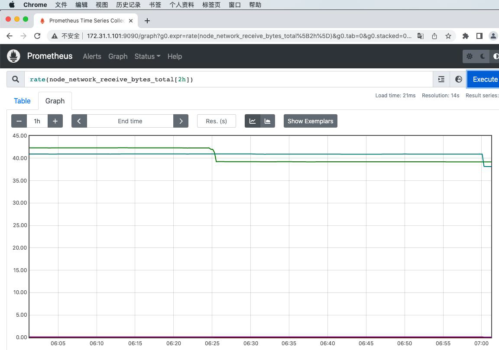
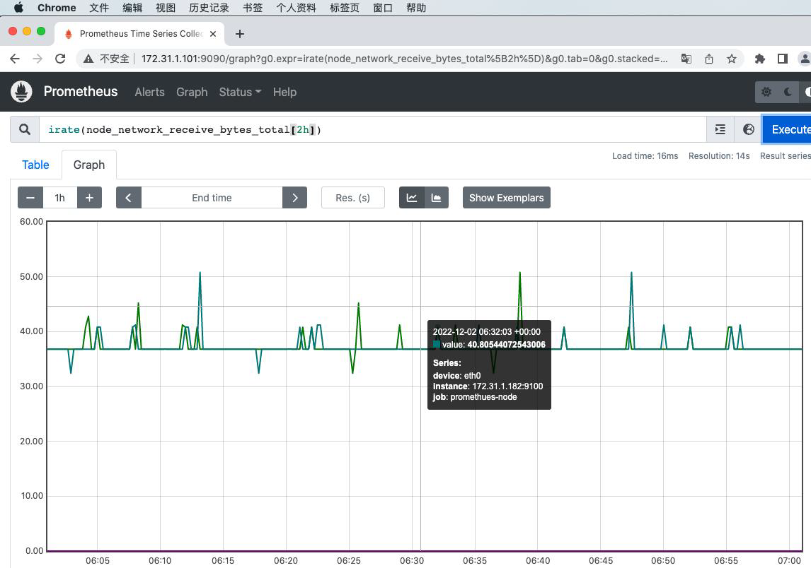
对指标数据进行进行聚合运算：
- by，在计算结果中，只保留by指定的标签的值，并移除其它所有的
sum(rate(node_network_receive_packets_total{instance=~".*"}[10m])) by (instance)
sum(rate(node_memory_MemFree_bytes[5m])) by (increase)
- without，从计算结果中移除列举的instance,job标签，保留其它标签
sum(prometheus_http_requests_total) without (instance,job)
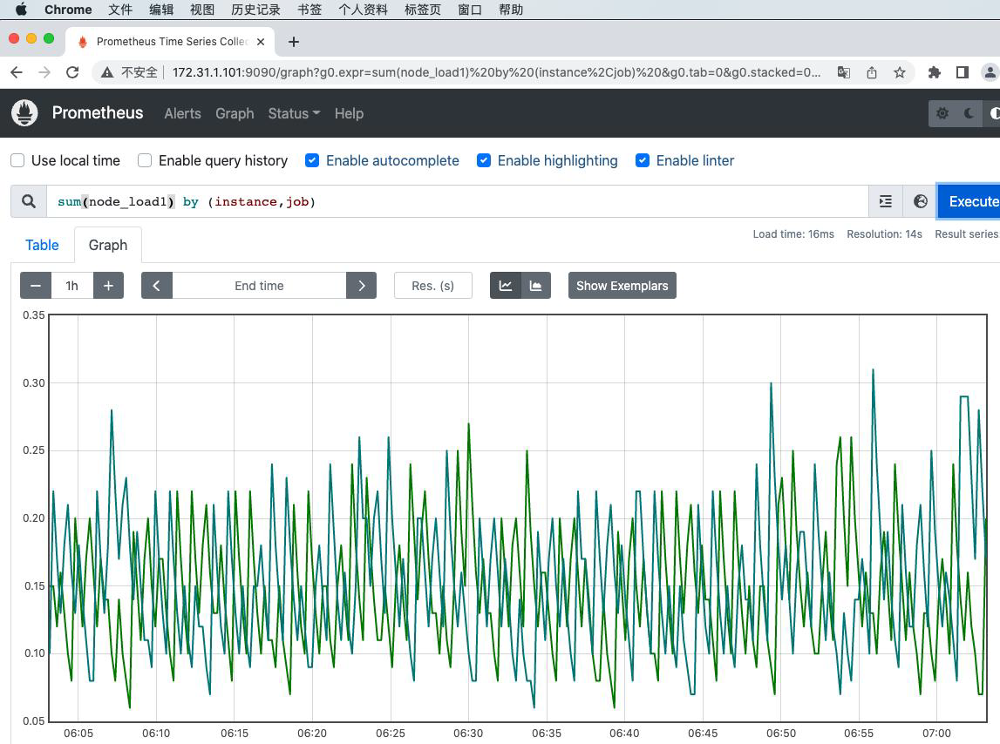
容易误解的函数
除了上面我们说的这些常用的聚合函数外，Prometheus还内置了很多其他函数，其中用得最广并且最容易被人误解的是 increase 和 rate 函数，我们讲一讲这两个函数
先来看 increase 函数，字面意思上表示求取一个增量，接收一个 range-vector，range-vector 显然是会返回多个 value + timestamp 的组合。我们直观地理解就是，直接把时间范围内的最后一个值减去第一个值，不就可以得到增量了吗？非也！
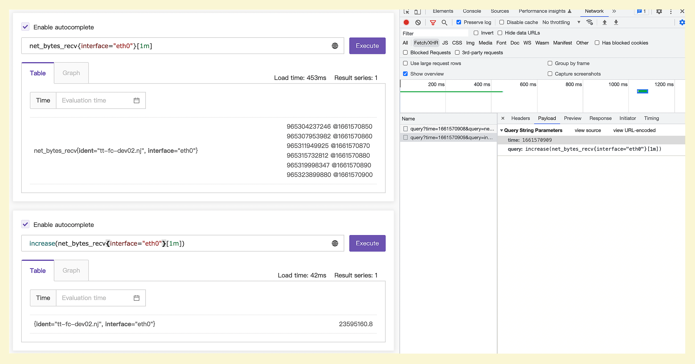
你可以看一下这张图，图里的一些关键信息，我摘录成了文本，你可以看一下。
promql: net_bytes_recv{interface="eth0"}[1m] @ 1661570908
965304237246 @1661570850
965307953982 @1661570860
965311949925 @1661570870
965315732812 @1661570880
965319998347 @1661570890
965323899880 @1661570900
promql: increase(net_bytes_recv{interface="eth0"}[1m]) @1661570909
23595160.8
监控数据是10秒上报一次，所以虽然两次 PromQL 查询时间不同，一次是 1661570908，一次是 1661570909，但是所查询的原始数据内容是一样的，就是 1661570850~1661570900 这几个时间点对应的数据。
直观上理解，在这几个时间点对应的数据上求取 increase，无非就是最后一个值减去第一个值，即965323899880-965304237246=19662634。不过很遗憾，实际结果是23595160.8，差别有点大，显然这个直观理解的算法是错的。
实际上，increase 这个 PromQL 发起请求的时间是1661570909，时间范围是[1m]，相当于告诉Prometheus，我要查询1661570849（由1661570909-60得出）~1661570909之间的 increase 数值。但是原始监控数据并没有 1661570849、1661570909 这两个时刻的数值，怎么办呢？
Prometheus只能基于现有的数据做外推，也就是使用最后一个点的数值减去第一个点的数值，得到的结果除以时间差，再乘以60。
$$(965323899880.0-965304237246.0)\div(1661570900.0-1661570850.0)\times60=23595160.8$$
这样最终就得到了1分钟的 increase 值，是个小数。趁热打铁，我们再说一下 rate 函数，increase 函数是求取的时间段内的增量，而且有数据外推，rate 函数则求取的是每秒变化率，也有数据外推的逻辑，increase 的结果除以 range-vector 的时间段的大小，就是 rate 的值。我们用下面的 PromQL 验证一下。
rate(net_bytes_recv{interface="eth0"}[1m])
== bool
increase(net_bytes_recv{interface="eth0"}[1m])/60.0
这里 == 后面跟了一个 bool 修饰符，表示希望返回一个 bool 值，如果是 True 就会返回 1，如果是 False 就返回 0。我们观察结果后发现，这个表达式永远都会返回 1，即等号前后的两个 PromQL 语义上是相同的。
rate 函数求取的变化率，相对平滑。因为是拿时间范围内的最后一个值和第一个值做数据外推，一些毛刺现象就会被平滑掉。如果想要得到更敏感的数据，我们可以使用 irate 函数。irate 是拿时间范围内的最后两个值来做计算，变化就会更剧烈，我们拿网卡入向流量这个指标来做个对比。
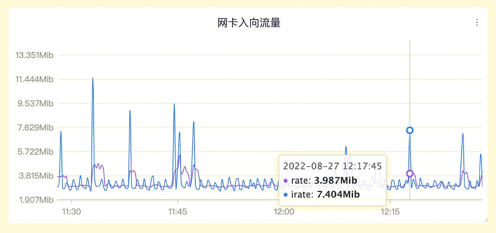
色的变化得更剧烈的线是用 irate 函数计算得到的，而紫色的相对平滑的线是用 rate 函数计算得到的，对比还是很强烈的。